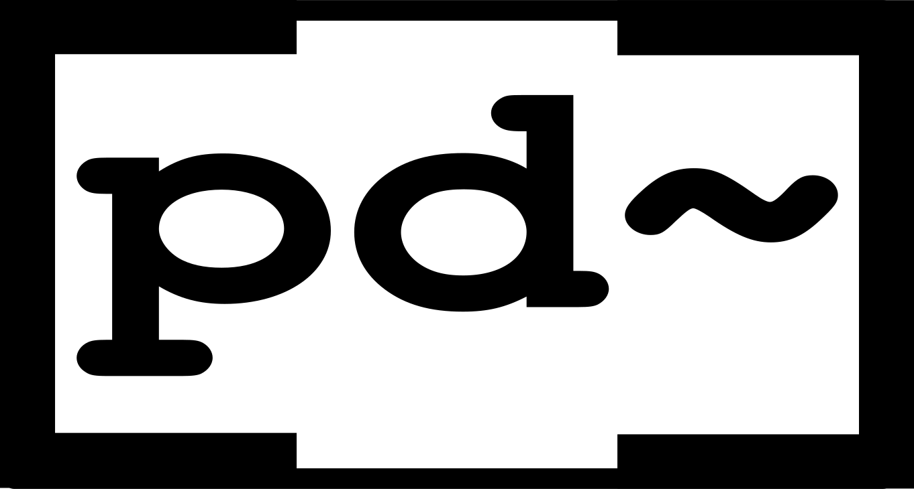
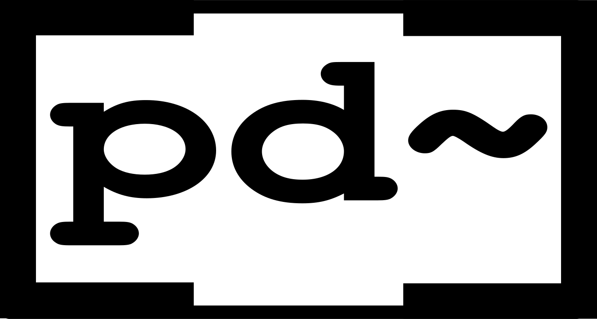

Pd (Pure Data) is a graphical data-flow programming environment which is geared towards real-time interactive computer music and multimedia applications. It is a full-featured open-source alternative to its commercial sibling, Cycling74’s Max.
Purr Data serves the same purpose, but offers a new and much improved graphical user interface and includes many 3rd party plug-ins. Like Pd, it runs on Linux, macOS and Windows, and is open-source throughout.
The easiest way to get up and running on Mac and Windows is to use one of the available binary packages and installers available from the Github releases page. Generally you can just double-click these packages and go through the usual (platform-dependent) installation process.
Linux users: On OBS we provide the JGU packages for a variety of Linux distributions. If your Linux distro is not among any of these then sorry, you’ll just have to bite the bullet and build Purr Data from source. (It’s not that hard any more once you got all the required dependencies installed, but it may take a little while.)